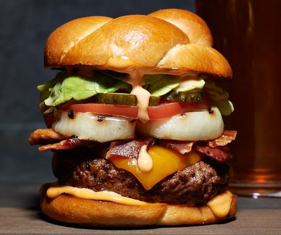
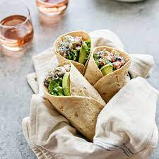
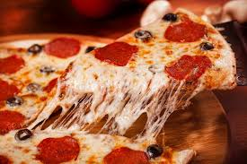
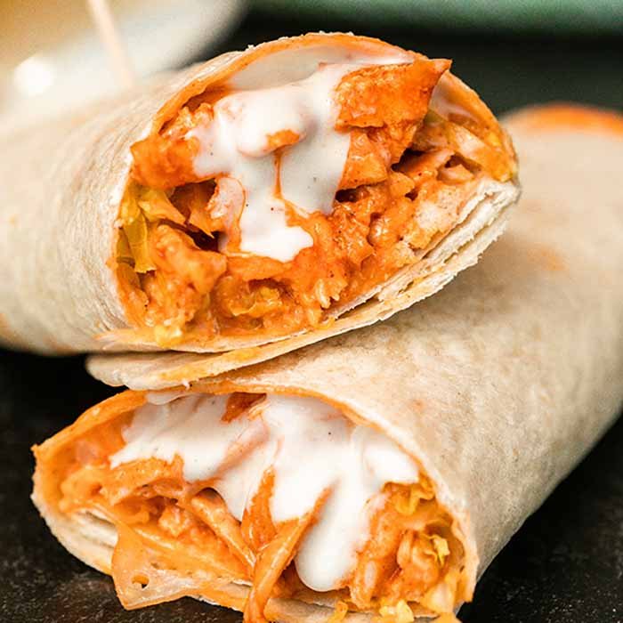
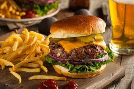

Our Story
Tasha's restaurant was established in 2023 after the Covid-19 pandemic.
Tasha was an executive chef working directly under the one and only Gordon Ramsey and was his go-to person.
When the pandemic hit it was all out devastation as Tasha couldn't work anymore as all public gathering destinations were on lockdown.
Tasha was forced to move back to her home country(South Africa) to wait out the lockdown.
Luckily thelockdown was over and Tasha decided to work at various restaurants, saving up to one day start her own restaurant. Finally 2023 came and Tasha had enough
saved up and opened up her very own restaurant serving world-class food.